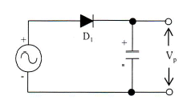
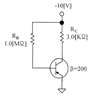
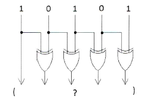
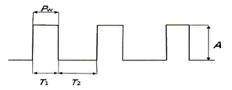
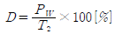
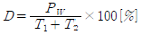
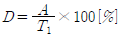
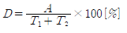
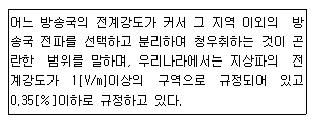

방송통신기사 (2014-03-09 기출문제)
1과목: 디지털 전자회로
1. 카운터(Counter)를 이용하여 컨베이어 벨트를 통과하는 생산품의 개수를 파악하려고 한다. 최대500개의 생산품을 카운트하기 위한 카운트를 플립플롭을 이용 제작할 때 최소한 몇 개의 플립플롭이 필요한가?
- 5
- 7
- 9
- 11
(정답률: 61%)

2. FM에서 최대 주파수편이가 60[kHz]이고 최대 변조주파수가 6[kHz]라 하면 변조도는 얼마인가? (단, 변조지수는 8이다.)
- 6[%]
- 60[%]
- 80[%]
- 120[%]
(정답률: 44%)
3. 외부로부터의 전기적인 신호가 없어도 회로 내에서 전기진동을 발생하는 회로를 무엇이라 하는가?
- 발진회로
- 변조회로
- 정류회로
- 전원회로
(정답률: 62%)
4. 기억된 내용을 자외선을 비추어 소거시키는 ROM은?
- EPROM
- EAROM
- MASK ROM
- EEPROM
(정답률: 54%)
5. 0과 1의 조합에 의하여 어떤한 기호라도 표현될수 있도록 부호화를 행하는 회로를 무엇이라 하는가?
- Decoder
- Detector
- Encoder
- Comparator
(정답률: 58%)
6. 다음과 같은 용량성 캐패시터를 이용한 평활회로의 특징으로 옳지 않은 것은?

- 정류파형의 주파수가 높을수록 맥동률은 적어진다.
- 부하저항이 클수록 맥동률은 적어진다.
- 정류파형의 주파수는 맥동률과 무관하다.
- 캐패시터 용량값이 클수록 맥동률은 적어진다.
(정답률: 51%)
7. 다음 중 트랜지스터 증폭 특성에 대한 설명으로 틀린 것은?
- 공통 베이스 회로의 입력 임피던스는 작고 출력 임피던스는 크다.
- 공통 베이스 회로의 전류 이득과 공통 컬렉터 회로의 전압 이득은 모두 1보다 크다.
- 공통 컬렉터 회로의 입력 임피던스는 크고 출력 임피던스는 작아 임피던스 매칭 회로로 사용된다.
- 증폭 회로의 입출력 위상관계는 공통 베이스 및 컬렉터 회로의 경우 동일 위상이고 공통 이미터의 경우 반전된 위상이다.
(정답률: 45%)
8. 310을 Gray Code로 변환하면?
- 0010
- 0001
- 0100
- 0110
(정답률: 47%)
9. 다음 증폭기 회로에서 β=200인 경우 컬렉터 전류 IC는 얼마인가?

- 1.25[mA]
- 2.00[mA]
- 10.1[mA]
- 1.86[mA]
(정답률: 39%)
10. 디지털 논리 소자에서 회로 동작을 손상시키지 않으면서 출력에 연결할 수 있는 동일한 논리 게이트의 수를 무엇이라고 하는가?
- Settling
- Fan-Out
- Hold
- Setup
(정답률: 56%)
11. 잡음지수가 3[dB]이고 증폭도가 20[dB]인 전치 증폭기를 잡음지수가 5[dB]인 종속 증폭기에 연결하면 종합잡음지수는 얼마가 되는가?
- 3[dB]
- 3.2[dB]
- 5[dB]
- 5.2[dB]
(정답률: 43%)
12. 다음 그림과 같은 논리회로 출력의 값과 그 기능은?

- 11011, 패리티 점검
- 11000, 양수/음수 점검
- 11111, 코드 변환
- 100000, 패리티 변환
(정답률: 54%)
13. 다음 중 환형 계수기(Ring Counter)와 같은 기능을 갖는 것은?
- BCD 계수기
- 가역 계수기
- 시프트 레지스터
- 순환 시프트 레지스터
(정답률: 54%)
14. 다음 그림은 이상적인 펄스를 나타낸 것이다. 펄스의 듀티 싸이클(Duty Cycle) D의 식으로 맞는 것은?





(정답률: 58%)
15. 트랜지스터의 스위칭 시간으로 Turn-on 시간은?
- 하강시간
- 하강시간+축적시간
- 축적시간
- 상승시간+지연시간
(정답률: 54%)
16. 발진회로에서 발진을 지속하기 위해 필요한 과정은?
- 출력신호의 일부분을 부궤환시킨다.
- 출력신호의 일부분을 정궤환시킨다.
- 외부로부터 지속적으로 입력신호를 제공한다.
- L과 C 성분을 제거한다.
(정답률: 61%)
17. 다음 중 변조과정에 대한 설명으로 옳은 것은?
- 반송파에 정보신호(음성ㆍ화상ㆍ데이터 등)를 싣는 것을 변조라 한다.
- 변조된 높은 주파수의 파를 반송파라 한다.
- 변조는 소신호로 대전류를 제어하는 것이다.
- 저주파는 음성 신호파를 운반하는 역할을 하므로 피변조파라 한다.
(정답률: 65%)
18. 다음 중 증폭기에 대한 설명으로 옳은 것은?
- 교류성분을 직류성분으로 변환하기 위한 전기회로다.
- 다이오드를 사용하여 교류 전압원의 (+) 또는 (-)의 반 사이클을 정류하고, 부하에 직류 전압을 흘리도록 한다.
- 교류(AC)를 직류(DC)로 바꾸는 여러 과정 가운데 맥류를 완전한 직류로 바꾸어 준다.
- 입력의 신호변화 형상이 출력단에 확대되어 복사시킨다.
(정답률: 57%)
19. 정류회로에서 다이오드를 병렬로 여러 개 접속시킬 경우에 나타나는 특성으로 옳은 것은?
- 과전압으로부터 보호할 수 있다.
- 과전류로부터 보호할 수 있다.
- 정류기의 역방향 전류가 감소한다.
- 부하출력에서 맥동률을 감소시킬 수 있다.
(정답률: 43%)
20. 다음 중 정류회로를 평가하는 파라미터에 해당되지 않는 것은?
- 최대역전압
- 궤환율
- 전압변동률
- 정류효율
(정답률: 55%)
2과목: 방송통신 기기
21. 우리나라 위성방송에서 사용하고 있는 송신 전파의 편파는?
- 수직직선편파
- 수평직선편파
- 우선타원편파
- 좌선타원편파
(정답률: 80%)
22. 디지털케이블방송의 신호압축방식이 아닌 것은?
- MPEG-2
- MPEG-4
- AC-3
- H.262
(정답률: 69%)
23. 우리나라 HDTV 화면의 종횡비는?
- 5:3
- 4:3
- 16:9
- 19:16
(정답률: 88%)
24. 임피던스가 25[Ω]인 반파장 안테나와 특성임피던스가 100[Ω]인 선로를 정합하기 위한 임피던스 값은?
- 150[Ω]
- 250[Ω]
- 25[Ω]
- 50[Ω]
(정답률: 84%)
25. 방송용으로 이용되는 인공위성이 갖추어야 할 조건이 아닌 것은?
- 12개 이상의 소출력 중계 위성
- 정지 궤도 위성
- 36,000[km] 궤도의 높이
- 120[W] 이상의 고출력
(정답률: 83%)
26. 전송신호가 111111111일 때 여기에 PN(Pseudo Noise)신호 100101010을 가하면 출력 신호 값은?
- 111111111
- 100101010
- 011010101
- 100101011
(정답률: 81%)
27. 다음 중 각종 영상신호의 소스와 모니터에 사용하여 On Air 중임을 알려주는 것은?
- 탤리시스템(Tally system)
- Border line generator
- 문자슈퍼장치
- 셀프 키
(정답률: 92%)
28. HD-SDI 신호의 Alignment 지터 측정에 사용되는 HPF(High Fass Filter)의 주파수는?
- 1[kHz]
- 10[kHz]
- 100[kHz]
- 1[MHz]
(정답률: 68%)
29. 지상파 디지털TV 방송방식에서 국가별 방식과 전송방식이 맞는 것은?
- 미국 : DVB-T에 16VSB
- 유럽 : DMB-T/H에 VSB/OFDM
- 중국 : ISDB-T에 COFDM
- 한국 : ATSC에 8VSB
(정답률: 88%)
30. 벡터 패턴을 나타내는 오실로스코프로서 벡터스코프에 대한 설명으로 틀린 것은?
- X 축에 대하여 B-Y 신호는 수평편향이다.
- X 축에 대하여 R-Y 신호는 수평편향이다.
- 기저대역 변조파 신호를 관찰한다.
- 색도 데코더는 B-Y와 R-Y 신호 입력을 제공한다.
(정답률: 75%)
31. 다음 중 MPEG 분석기에서 확인 할 수 없는 항목은?
- Transport Stream의 비트레이트
- PAT의 반복주기
- 피크대 평균 전력비
- PCR의 정확도
(정답률: 78%)
32. 다음 중 UHD 방송과 거리가 먼 것은?
- 해상도 : 3840X2160
- 실감방송
- 해상도 : 1920X1080
- HEVC
(정답률: 91%)
33. ATSC의 데이터방송 기술표준은?
- ACAP(Advanced Common Application Platform)
- OCAP(OpenCable Application Platform)
- DCAP(DTV Common Application Platform)
- MHP(Multimedia Home Platform)
(정답률: 80%)
34. 일정한 범위에서 출력 신호의 주파수를 반복하여 발생시키는 장치는?
- 오디오 신호발생기
- 볼트미터
- 스펙트럼 아날라이저
- 스위프 신호발생기
(정답률: 65%)
35. 다음 중 음향효과기기가 아닌 것은?
- Amplifier
- Equalizer
- Expander
- Noise Gate
(정답률: 74%)
36. 다음 중 디지털 위성 송신기의 주요 구성 부분이 아닌 것은?
- 소스 신호 압축부
- 변조부
- IF 및 RF신호 처리부
- 저잡음 변환기(LNB)
(정답률: 76%)
37. CATV 시스템에서 분기 단자에 신호를 가했을 때 입력레벨과 간선의 출역단자에서 나오는 출역레벨과의 차에 의해 발생하는 손실은?
- 누화손실
- 결합손실
- 단자간 결합손실
- 역결합손실
(정답률: 86%)
38. 다음 중 방송 프로그램을 저장하는 기기나 설비가 아닌 것은?
- VCR
- Console
- 메모리 카드
- Blue-ray Disk
(정답률: 89%)
39. 우리나라 지상파 DMB 전송방식을 설명한 것 중 옳은 것은?
- DQPSK변조, COFDM 멀티캐리어
- QAM변조, COFDM 멀티캐리어
- DQPSK변조, ATSC
- ASK변조, ISBD-TSB
(정답률: 76%)
40. 다른 국의 VTR에 의한 녹화 재생이나 다원중계 등 비동기의 영상신호를 필드 또는 프레임 메모리에 기록하여 이것을 자국의 동기신호에 맞추어 읽어내는 장치는?
- TBC
- FS
- ADC
- DVD
(정답률: 77%)
3과목: 방송미디어 공학
41. 대기온도가 20℃ 일 때 음파가 공기 중에서 전달되는 속도는 얼마(m/sec)인가?
- 342.9
- 343.3
- 343.7
- 344.1
(정답률: 76%)
42. 다음 중 우리나라 지상파 디지털 TV 전송방식은?
- ATSC
- IBST
- DVB-T
- DVB-C
(정답률: 89%)
43. 슬로우모션이나 스틸에서는 타임코드를 읽을 수 없기 때문에 이 문제를 해결하기 위해 개발된 것은?
- 타임코드(TC)방식
- 자동편집방식
- VITC방식
- CTL방식
(정답률: 59%)
44. 다음 중 우리나라 지상파 DMB에 대한 설명이 아닌 것은?
- VHF대역 사용
- OFDM을 사용
- 단일캐리어 변조 방식을 사용
- H.264를 영상압축으로 사용
(정답률: 63%)
45. IP 네크워크 상에서 구현되는 멀티미디어 융합서비스는 무엇인가?
- DMB
- CATV
- IPTV
- MATV
(정답률: 82%)
46. 디지털케이블 텔레비전이나 IPTV 프로그램을 시청하는 한 형태로, 선택된 프로그램에 대해서만 요금을 부과하는 서비스는?
- 유로프로그램 서비스(Pay per view)
- 부가서비스(Auxiliary service)
- 티어링 서비스(Tiering service)
- 유료채널 서비스(Pay service)
(정답률: 77%)
47. 동화상을 구성하는 한 장의 정지화상을 무엇이라 하는가?
- 프레임
- 섹터
- 필드
- 레코더
(정답률: 84%)
48. 다중접속(Multiple Access)이란 제한된 주파수 대역폭 자원을 잘 분배 하고 기술적으로 보완하여 최대한 많은 사용자들이 안정적으로 사용하게 하는 접속 방식 3가지를 맞게 나열한 것은?
- FDMA, TDMA, PDMA
- ADMA, FDMA, DDMA
- PDMA, DDMA, CDMA
- FDMA, ADMA, CDMA
(정답률: 78%)
49. ATCS(Advanced Television System Committee) 방식에 대한 설명으로 옳지 않는 것은?
- Carrier는 Multi Carrier이다.
- 전송방식은 8-VSB이다.
- 압축방식은 영상은 MPEG-2, 음향은 Dolby AV-3이다.
- MPEG-2 TS를 사용한다.
(정답률: 82%)
50. 소리의 세기 레벨이 80[dB]인 음원이 두개 있을 때, 레벨의 합으로 가장 적절한 것은?
- 40[dB]
- 80[dB]
- 83[dB]
- 160[dB]
(정답률: 85%)
51. 보기의 MPEG의 기본개념 중 서로 다른 미디어나 다른 플랫폼 등과의 정보교환 가능성을 지칭하는 것은?
- backup
- interoperability
- scalability
- extensibility
(정답률: 82%)
52. Eureka-147 기반 디지털 오디오 방송의 특징이 아닌 것은?
- 단일캐리어 변조방식 사용
- 다중경로 페이딩과 도플러 쉬프트에 대해 수신 성능이 우수함
- 전력 및 주파수 사용효율이 우수함
- 단일주파수 네트워크의 구성이 가능함
(정답률: 66%)
53. 디지털 신호 처리 체계에서 원신호와 샘플링 주파수와의 관계는? (단, fs:샘플링주파수, fmax:원신호의 최대주파수)
- fs < fmax
- fs = fmax
- fs > fmax
- fs ≥ 2fmax
(정답률: 91%)
54. HD급 위성 디지털 TV에 대한 기술 중 잘못 기술된 것은?
- 비디오 압축규격 : MPEG-2 MP@HL
- Symbol 전송속도 : 20.3[MSymbol/Sec]
- 변조방식 : 8-VSB
- 변조 후 대역폭 : 27[MHz]
(정답률: 56%)
55. 스튜디오 조명에서 부드러운 빛을 내고 빛의 감소를 완화하거나 없애기 위해 또는 전체적인 기본 조명도를 높여주기 위해 사용되는 장치는?
- 반사장치(Reflector)
- 스크림(Scrim)
- 전자디머(Electronic dimmer)
- 플래그(Flag)
(정답률: 61%)
56. 다음 중 디지털 음향에서 음향분야에서 주로 사용하는 표준 샘플링(Sampling) 주파수와 거리가 먼 것은?
- 32[kHz]
- 44.1[kHz]
- 48[kHz]
- 86[kHz]
(정답률: 77%)
57. 카메라를 인간의 눈과 비슷하게 만들면서 카메라의 메커니즘을 완성시킨 장치는?
- 필름
- 원근조절기
- 셔터
- 플래시
(정답률: 82%)
58. 다음 중 디지털방송시스템에의 특징이 아닌 것은?
- 방송의 다채널
- 방송의 고품질
- 수신기 복조과정에서 오류정정 불가능
- 방송의 스크램블화로 수신제한 가능
(정답률: 83%)
59. 다음 중 피사체의 전방 아래쪽에서 비춤으로써 인물의 공포분위기 및 괴이한 장면을 표현하기 위한 조명으로 가장 적절한 것은?
- 백 라이트 (back light)
- 톰 라이트 (top light)
- 키 라이트 (key light)
- 플로어 라이트 (floor light)
(정답률: 82%)
60. 멀티미디어 및 하이퍼 미디어의 정의, 부호화 원칙, 시스템 요구사항, 오브젝트 클래스를 이용한 부호화 표현 등을 목적으로 하는 국제 표준화 그룹은?
- MPEG-1
- MPEG-2
- MPEG-4
- MPEG
(정답률: 79%)
4과목: 방송통신 시스템
61. 다음 문장에서 설명하고 있는 것으로 옳은 것은?

- 서비스에리어(Service Area)
- 블란켓트에리어(Blanket Area)
- 최고운용주파수(Maximum Useful Frequency)
- 최적운용주파수(FOT:Frequency Of Optime Traffic)
(정답률: 88%)
62. 우리나라 지상파 디지털 방송(DTV)에서 채택하고 있는 영상압축 신호처리 방식은?
- JPEG
- M-JPEG
- ZIP-1
- MPEG-2
(정답률: 83%)
63. 텔레비전 방송송신용 안테나가 아닌 것은?
- 슈퍼 게인 안테나
- 헬리컬 안테나
- 슈퍼턴 스타일 안테나
- 야기 안테나
(정답률: 68%)
64. 우리나라 지상파DMB 전송시스템의 오류분산에서 고속정보채널(Fast Information Channel)에 사용하는 방식은 무엇인가?
- 시간인터리빙
- 주파수인터리빙
- 길쌈부호
- CRC
(정답률: 73%)
65. 다음 중 도시용 공시청 시스템의 설계 시 주의사항으로 옳지 않은 것은?
- 반사에 의한 고스트, 혼신, 외래 잡음이 없는 장소를 선택한다.
- 설계전 현지조사를 통한 자립주나 인입용 전주 등을 세울 위치를 확인한다.
- 고스트가 생기는 지역은 TV수상기 입력레벨이 80dB 이상 되도록 설계한다.
- 건물 옥상에 피뢰침이 설치되어 있는 경우, 피뢰설비에 설치하도록 한다.
(정답률: 80%)
66. CATV 동축케이블 내의 전자파 속도는? (단, εr>=2.3(비투자율), μr=1(비유전율), ε0≒8.855×10-12[F/m], μ0=4π×10-7[H/m])
- 약 1.5×10⁸[m/s]
- 약 2.0×10⁸[m/s]
- 약 2.5×10⁸[m/s]
- 약 3.0×10⁸[m/s]
(정답률: 76%)
67. FM송신기에서 좌신호와 우신호를 합과 차신호로 만들고 합신호는 모노형 수신기 청취자에게 차신호는 스테레어 수신자에게 전송되도록 하는 회로는?
- 프리엠퍼시스회로
- 매트릭스회로
- 평형변조기
- FM 여진기(Excitor)
(정답률: 75%)
68. 방송국 송신소 시스템 설계의 기본 조건으로 송신점의 선정에 해당되지 않는 것은?
- 시설물의 건설비를 절약할 수 있는 장소이어야 하며 기기반입이 용이할 것
- 치국(置局)을 목적으로 하는 구역에 전파는 차단 시킬 것
- 송신소 운용 요원의 통근 거주가 적합한 지역일 것
- 대기 환경의 염려가 적을 것
(정답률: 76%)
69. 다음 중 위성에서 송신하는 전파를 이용하여 지구 전체를 측위할 수 있는 시스템으로 위성을 이용하여 자동차나 항공기 또는 선박과 같은 이동물체의 속도를 측정할 수 있는 것은?
- GPS
- VAST
- ENG
- STL
(정답률: 87%)
70. 다음 중 CCTV시스템의 기본 구성요소가 아닌 것은?
- 촬상장치
- 전송장치
- 표시장치
- 기계장치
(정답률: 68%)
71. 방송국 송신설비의 급전선 요건으로 옳지 않는 것은?
- 손실이 될 수록 적을 것
- 정비 점검이 용이할 것
- 급전선의 정수(定數)가 최대치로 변할 것
- 건설비 비용이 적을 것
(정답률: 87%)
72. 위성방송 시스템에서 스크램블 신호를 원래의 신호로 바꾸려면 어떻게 해야 하는가?
- 디코더를 설치하여 디스크램블 해야 한다.
- 인코더를 설치하여 스크램블 해야 한다.
- 인코더를 설치하여 디스크램블 해야 한다.
- 디코더를 설치하여 스크램블 해야 한다.
(정답률: 84%)
73. CATV(SO) 방송시스템의 신호 흐름이 옳은 것은?
- 전송계 ⇒ 센터계 ⇒ 단말계
- 센터계 ⇒ 전송계 ⇒ 단말계
- 수신계 ⇒ 센터계 ⇒ 전송계
- 센터계 ⇒ 전송계 ⇒ 분배계
(정답률: 77%)
74. 광섬유케이블의 전송특성은 광섬유의 손실과 밀접한 관계가 있다. 다음 중 광섬유 손실에 해당하지 않는 것은?
- 산란손실
- 흡수손실
- 접속손실
- 차폐손실
(정답률: 81%)
75. 공중선의 이득을 절대이득(dBi)과 상대이득(dBd) 로 구분해 볼 수 있는데, 이중 상대이득이 5.5[dBd]인 경우 절대이득은 몇 [dBi]인가?
- 7.65[dBi]
- 8.55[dBi]
- 9.15[dBi]
- 11.22[dBi]
(정답률: 69%)
76. 우리나라 지상파 DMB방송서비스에서 사용하고 있는 주파수대는?
- MF
- VHF
- SHF
- UHF
(정답률: 75%)
77. 다음 중 주파수 변조에서 최대주파수편이가 75[kHz]와 변조신호의 주파수가 15[kHz]일 경우에 FM 주파수의 대역폭으로 옳은 것은?
- 15[kHz]
- 75[kHz]
- 50[kHz]
- 180[kHz]
(정답률: 73%)
78. FM 수신기에 사용되는 스켈치 회로에 대한 설명 중 맞는 것은?
- 신호입력이 없을 때 잡음을 제거하기 위한 회로이다.
- 충격성 잡음의 영향을 제거하기 위한 회로이다.
- 수신회로의 진폭을 일정하게 한다.
- 변조기능을 수행한다.
(정답률: 73%)
79. AM 송신기의 구성요소가 아닌 것은?
- 완충증폭기
- 주파수 체배기
- 여진증폭기
- 프리엠퍼시스
(정답률: 71%)
80. 다음 중 ASK의 특징이 아닌 것은?
- 동기, 비동기 ASK가 가능하다.
- 동기 검파시 정합 여파기를 시용한다.
- 대역폭은 기저대역 신호의 최대주파수의 1/2이다.
- 디지털 변조방식이다.
(정답률: 56%)
5과목: 전자계산기 일반 및 방송설비기준
81. 다음 중 프로그램 작성을 위한 순서도에 대한설명으로 적합하지 않는 것은?
- 순서도는 ISO에서 제공한 기호로만 표현한다.
- 순서도는 프로그램의 설계도라 할 수 있다.
- 순서도 작성 시 자신이 정한 기호를 사용할 수 있다.
- 시스템 순서도는 processsing 순서도라 하며, 시스템 전체의 작업내용을 총괄적으로 도시한다.
(정답률: 78%)
82. DMA(Direct Memory Access)에 관한 설명 중 틀린 것은?
- 주변장치와 기억장치 등의 대용량 데이터 전송에 적합하다.
- 프로그램방식보다 데이터의 전송속도가 느리다.
- CPU의 개입 없이 메모리와 주변장치 사이에서 데이터 전송을 수행한다.
- DMA전송이 수행되는 동안 CPU는 메모리 버스를 제어하지 못한다.
(정답률: 78%)
83. 다음 중 중앙처리장치의 구성요소가 아닌 것은?
- 시스템 버스(System Bus)
- 제어 장치(Control Unit)
- 논리 연산 장치(ALU)
- 레지스터(Register)
(정답률: 69%)
84. 88[MHz]내지 108[MHz]의 주파수의 전파를 이용하여 음성을 보내는 방송은?
- 중파방송
- 단파방송
- 초단파방송
- 극초단파방송
(정답률: 62%)
85. 접근시간(access time)과 사이클 시간(cycle time)에 관한 설명으로 적합하지 않은 것은?
- 사이클시간이 접근시간보다 대개 시간이 더 걸린다.
- 접근시간은 메모리로부터 정보를 거쳐오는 걸리는 시간이다.
- 접근시간은 주기억장치에만 관계되며 보조기억장치와는 상관이 없다.
- 접근시간은 메모리로부터 정보를 가지고 나와서 다시 재 기억시키는데 걸리는 시간이다.
(정답률: 79%)
86. 마이크로프로세서에서 마이크로(μ)의 의미는 무엇인가?
- 1/100
- 1/1000
- 1000000
- 1/1000000
(정답률: 78%)
87. 다음 용어 정의가 잘못 설명된 것은?
- 지상파방송사업 : 방송을 목적으로 하는 지상의 무선국을 관리ㆍ운용하며 이를 이용하여 방송을 행하는 사업
- 종합유선방송사업 : 종합유선방송국을 관리∙운영 하며 정보∙교환 설비 및 전송ㆍ선로 설비를 이용하여 방송을 행하는 사업
- 위성방송사업 : 인공위성의 무선설비를 소유 또는 임차하여 무선국을 관리ㆍ운영하며 이를 이용하여 방송을 행하는 사업
- 방송채널사용사업 : 지상파방송사업자ㆍ종합유선 방송사업자 또는 위성방송사업자와 특정채널의 전부 또는 일부시간에 대한 전용사용계약을 체결하여 그 채널을 사용하는 사업
(정답률: 48%)
88. 다음 언어 중 구조적 프로그래밍(structured programming)에 적합한 기능과 구조를 갖는 것은?
- BASIC
- FORTRAN
- C
- RPG
(정답률: 78%)
89. 종합유선방송국시설에서 영상신호의 특성에 해당하지 않는 것은?
- 사용하여야 할 기저대역 주파수는 4.2[MHz]범위이내 일 것
- 신호의 바 레벨은 100±2 IRE이내 일 것
- 동기레벨은 40±1 IRE이내 일 것
- 출력 임피던스는 60[Ω] 평형일 것
(정답률: 68%)
90. 방송을 양호하게 수신할 수 있는 구역으로 전계강도가 방송통신위원회가 정하여 고시하는 기준 이상인 구역은? (문제 오류로 실제 시험에서는 모두 정답처리 되었습니다. 여기서는 1번을 누르면 정답 처리 됩니다.)
- 방송구역
- 블랭킷에러리어
- 전파구역
- 셀에어리어
(정답률: 85%)
91. 파일(File)의 개념을 바르게 표현한 것은?
- Code의 집합을 말한다.
- Character의 수를 말한다.
- Data base의 수를 말한다.
- Record의 집합을 말한다.
(정답률: 80%)
92. 다음 중 방송법상에서 정의한 방송의 형태가 아닌 것은?
- 텔레비전방송
- 라디오방송
- 이동전화방송
- 데이터방송
(정답률: 78%)
93. 방송편성의 정의에 대하여 옳게 설명된 것은?
- 보도, 교양, 오락, 등으로 방송프로그램의 영역을 분류한 것을 말한다.
- 방송되는 사항의 종류ㆍ내용ㆍ분량ㆍ시각ㆍ배열을 정하는 것을 말한다.
- 방송분야의 방송프로그램을 전문적으로 편성하는 것
- 광고를 목적으로 하는 방송내용물을 말한다.
(정답률: 70%)
94. 다음에 실행할 명령의 주소를 기억하여 제어 장치가 올바른 순서로 프로그램을 수행하도록 하는 정보를 제공하는 레지스터는?
- 명령 레지스터(IR)
- 프로그램 계수기(PC)
- 기억장치 주소 레지스터(MAR)
- 기억장치 버퍼 레지스터(MBR)
(정답률: 56%)
95. 방송사업의 허가·승인·등록 사항으로 적합하지 않은 것은?
- 종합유선방송사업 또는 중계유선방송사업 : 미래창조과학부장관의 허가
- 지상파방송사업 : 방송통신위원회의 허가
- 중계유선방송사업자가 종합유선방송사업을 하고자 하는 경우 : 미래창조과학부장관의 허가
- 방송채널사용·전광판방송사업 또는 음악유선방송사업 : 미래창조과학부장관에게 등록
(정답률: 46%)
96. 정지 또는 이동하는 사물의 순간적 영상을 전송하기 위하여 주사에 따라 발생되는 직접적인 전기적 변화를 무엇이라 하는가?
- 영상신호
- 동기신호
- 음성신호
- 필드
(정답률: 68%)
97. 다음 컴퓨터의 기능 중 옳지 않은 것은?
- 프로그램과 자료를 입력 장치를 통해 받아들이고, 처리된 결과를 출력장치로 내보낸다.
- 컴퓨터는 계산하는 기계로서 정확한 계산을 고속으로 행할 수 있다.
- 컴퓨터는 대단히 많은 양을 기억할 수 있을 뿐만 아니라 한번 기억한 내용은 지워버리지 않는 한없어지지 않는 기능이 있다.
- 컴퓨터는 수치의 크고 작음의 비교, 타당성 여부, 수치의 양음의 판별 등 여러 가지 조건의 비교 판단을 할 수 없다.
(정답률: 78%)
98. 다음 중 방송사업의 분류에 해당되지 않는 것은?
- 지상파방송사업
- 통신채널사용사업
- 위성방송사업
- 종합유선방송사업
(정답률: 75%)
99. 중앙연산처리장치에서 Micro-operation이 순서적으로 일어나게 하려면 무엇이 필요한가?
- 스위치(switch)
- 레지스터(register)
- 누산기(accumulator)
- 제어신호(control signal)
(정답률: 64%)
100. 종합유선방송국의 진폭변조기의 출력 특성 임피던스는 몇 [Ω]인가?
- 30[Ω]
- 50[Ω]
- 75[Ω]
- 600[Ω]
(정답률: 82%)